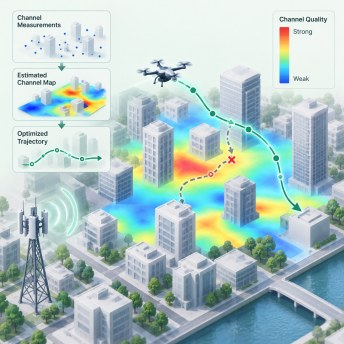
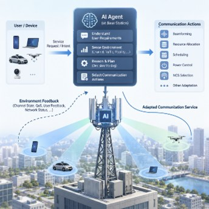

Wireless Intelligence Lab
Optimization and learning for intelligent wireless networks, from the ground to the sky. We design UAV and satellite communications, wireless-powered networks, and secure resource allocation using both classical optimization and deep learning.
School of Electronic and Electrical Engineering, Sungkyunkwan University
Directed by Prof. Kisong Lee
Research areas
-
 Aerial & Space NetworksUAV trajectory design, multi-UAV coordination, LEO satellite beam placement, and space-air-ground integrated networks.
Aerial & Space NetworksUAV trajectory design, multi-UAV coordination, LEO satellite beam placement, and space-air-ground integrated networks.
-

Online Wireless OptimizationConvex, combinatorial, and learning-based resource allocation with practical channel models such as building blockage and probabilistic LoS. -

Agentic AI CommunicationsAI agents that sense the environment, reason about user intent, and adapt beamforming, scheduling, and power control at the base station.
Updates
Recruitment
We are looking for graduate students and undergraduate researchers with a passion for wireless communications, optimization, and machine learning. If you are interested, contact Prof. Lee at kisonglee@skku.edu with a short introduction and your CV.